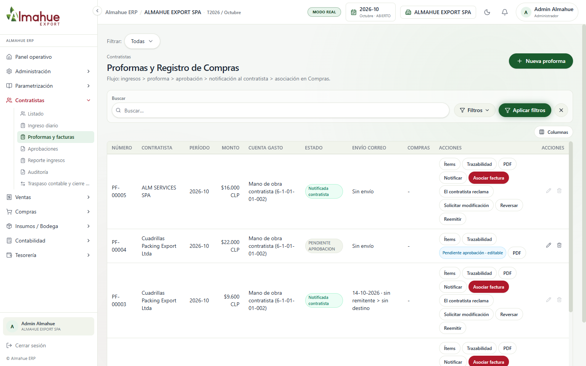
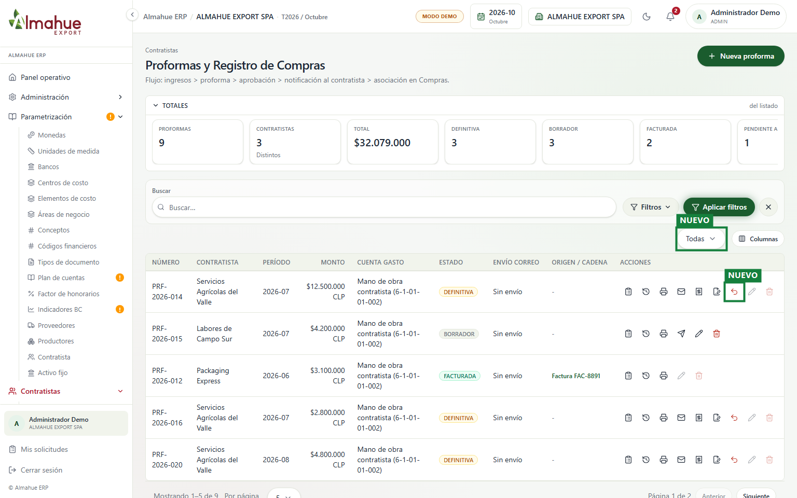
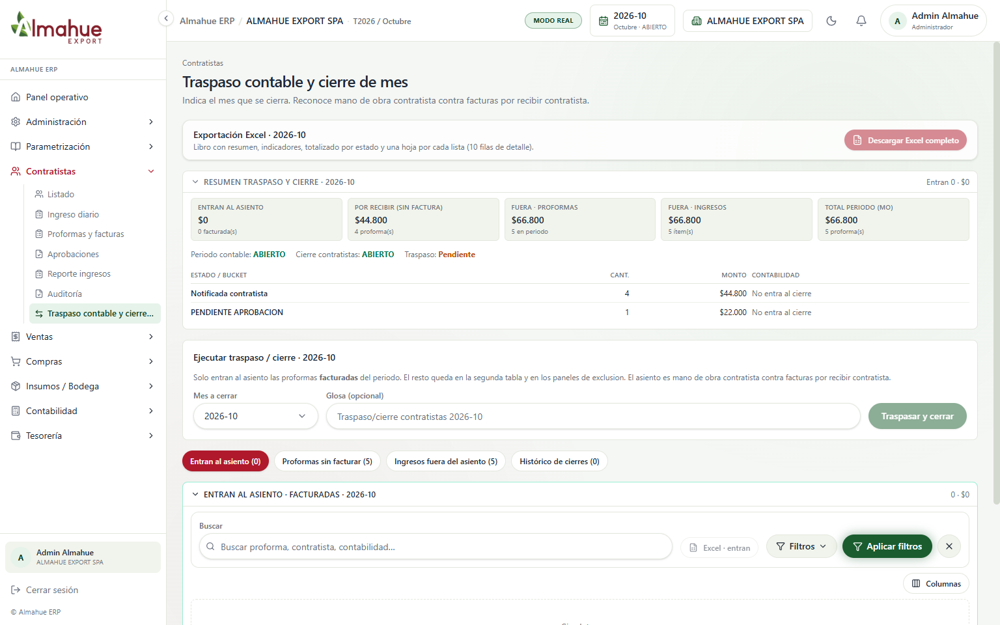
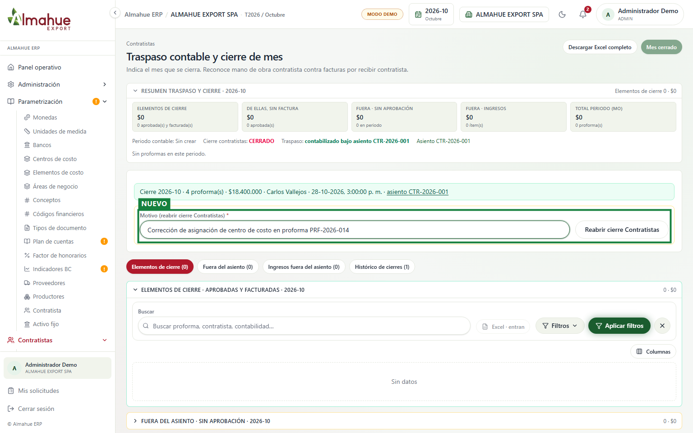

izquierda / derecha: antes y después. + y - : zoom. Esc cierra
Agrícola Almahue S.A. · Modo demo local · Período 2026-10. Los recuadros verdes y la etiqueta NUEVO destacan las funcionalidades añadidas. Un clic abre la imagen en el visor de alta resolución. La rueda o las teclas + y - hacen zoom. Flechas izquierda y derecha alternan entre el antes y el después. Esc cierra.


REVERSADA en base de datos y front, con badge visual de advertencia y opción en el selector de filtros de cabecera. Al reversar con clave de usuario, los ingresos diarios permanecen asociados permitiendo corregir cuadrillas, cuarteles, centros de costo o tarifas sin rearmar el documento desde cero. Tras corregirse, se habilita la re-solicitud de aprobación a DEFINITIVA.

centroCostoId y segrega Créditos por Contratista con campo auxiliar: RUT.